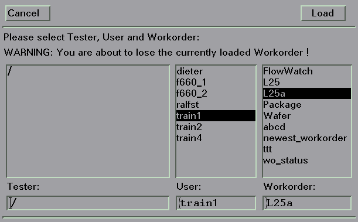

Editing Workorders
To edit an existing workorder, proceed as follows:
- Open the Workorder Manager Screen (steps 1 to 3 of Creating New Workorders).
- Click on Load.
The Tester/Operator/Workorder browser appears.

- Select the desired tester, operator and workorder, and click Load.
The workorder parameters then appear in the Workorder Manager window.
Note When loading a workorder in this way, all data previously displayed in the Workorder Manager window (workorder parameters, for example) are cleared from the Workorder Manager window. - Edit the workorder parameters as desired.
- Either,
- click Save to save your changes without changing the workorder name or,
- click Save As to save your changes under a new workorder name. You will be prompted for a name for the workorder.